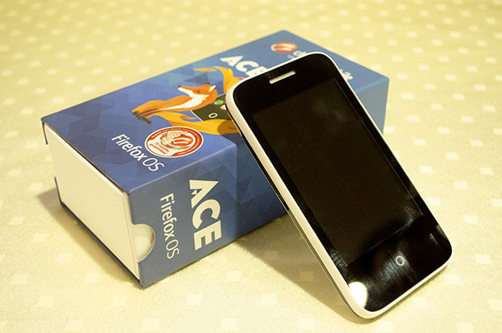
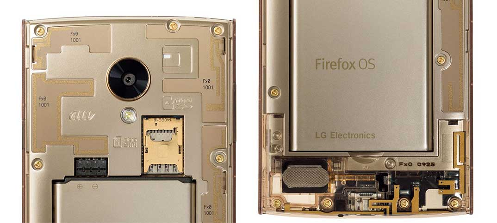
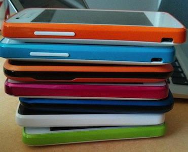
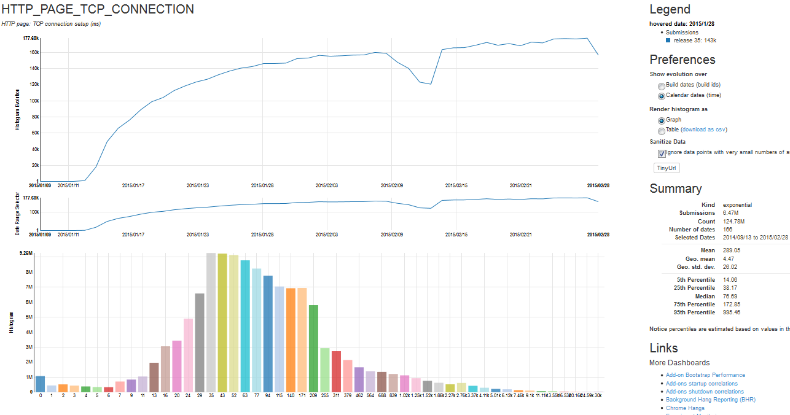

One Web - Many Devices and Networks
Patrick McManus and Dragana Damjanovic
One Web - Many Devices and Networks
NEAT Kickoff - Patrick McManus and Dragana Damjanovic
Firefox OS
Firefox OS (skim this eyechart)
Firefox OS is the only fully open mobile operating system based on web standards
It is aimed at markets that don't have access to the current leading operating systems
Deals with vast range of networks and devices
It is fully web based, there is no native layer. The hardware access happens via a Linux core that is the same that powers Android
HTML5 is a first class citizen in Firefox OS - it is the OS that keeps the promises others gave us some years ago (No SDK needed)
Firefox OS is live - we have end user phones being sold in Spain, Poland, Venezuela, India, Columbia, Japan, many more
Phillipines Cherry Ace ($22)
128MB RAM, 256MB of Flash, one limited camera and occasional 3G

Japan KDDI FX0 $450
1.5GB RAM, 16GB of Flash, two cameras, LTE, and nifty see-through case!

The Challenge - High Level

Transports that underperform with loss and latency
Networks that discourage change
A breadth of network designs
A breadth of hardware
Diverse opinions on privacy and security
One multifaceted networking stack
The Usual Suspects (Requirements?)
TLS on TCP 443 is the one true port
Legacy sometimes underutilizes bwidth and handles loss poorly
Shifting properties and trust - mobility, captive portals, etc..
Layering pain (mtu and tls record size, ocsp stapling and iw)
Power - scheduling and nat/KA
Layers of dns/tcp/tls/ocsp/http create enormous handshake overhead
Lots of good answers in literature - how to deploy and negotiate?
The Tools
Desktop for Rapid Release with Telemetry
Million+ beta audience
Regular new phone builds
Potential Overlay Operator
Telemetry Report
